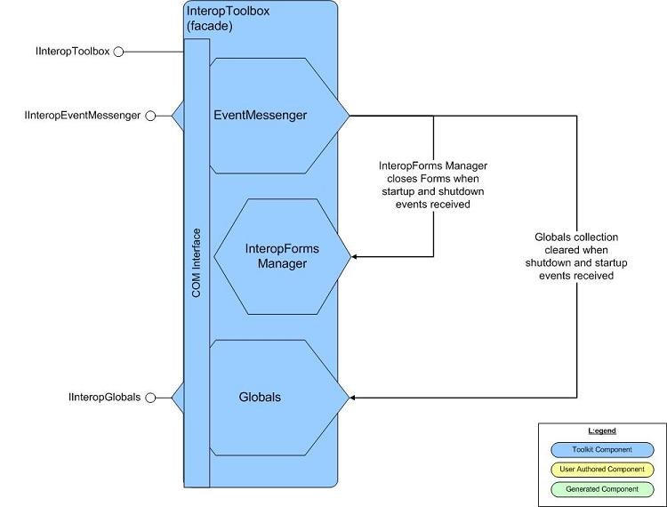

Overview
The Interop Forms Toolkit code components reside in a single assembly called Microsoft.InteropFormTools. This assembly is installed into the Global Assemblies Cache (GAC) as part of the Toolkit installation.
The InteropToolbox
The InteropToolbox is the class that contains the main points of interaction for InteropForm-related tasks. It is accessible from both Visual Basic 6.0 and .NET code. In the .NET code it is accessible from the My namespace.
The InteropToolbox contains the following main pieces:
- EventMessenger - used for raising and receiving notification of application-level events
- InteropFormManager - maintains collection of all InteropForms created
- Globals - collection for sharing 'global' variables between Visual Basic 6.0 and .NET code
Below is a diagram showing the pieces:

The Generated InteropForm Class
The InteropForm is a class generated by the Visual Studio AddIn installed with this Toolkit. The class acts as a wrapper around your custom .NET form. The diagram below represents this visually: